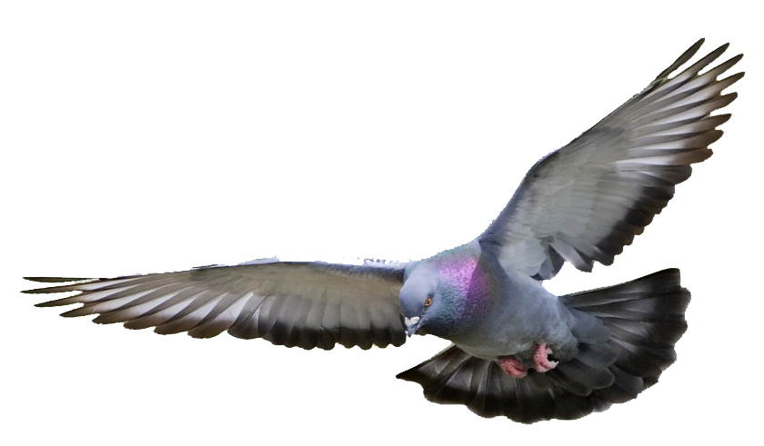
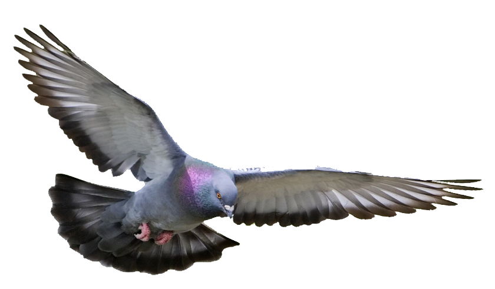
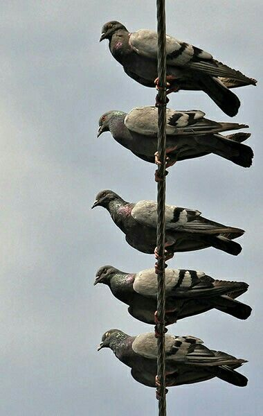
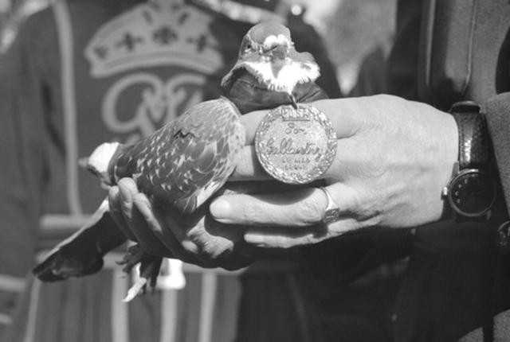
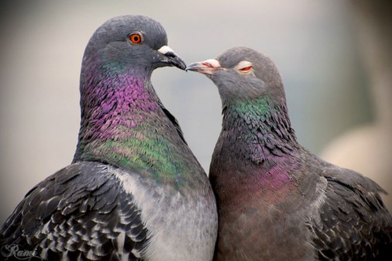
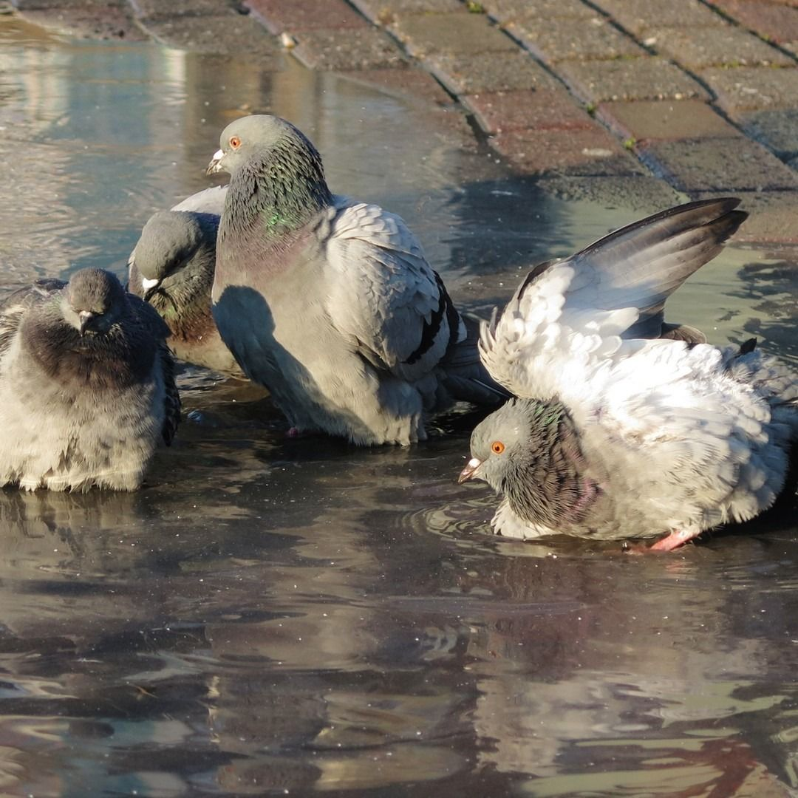
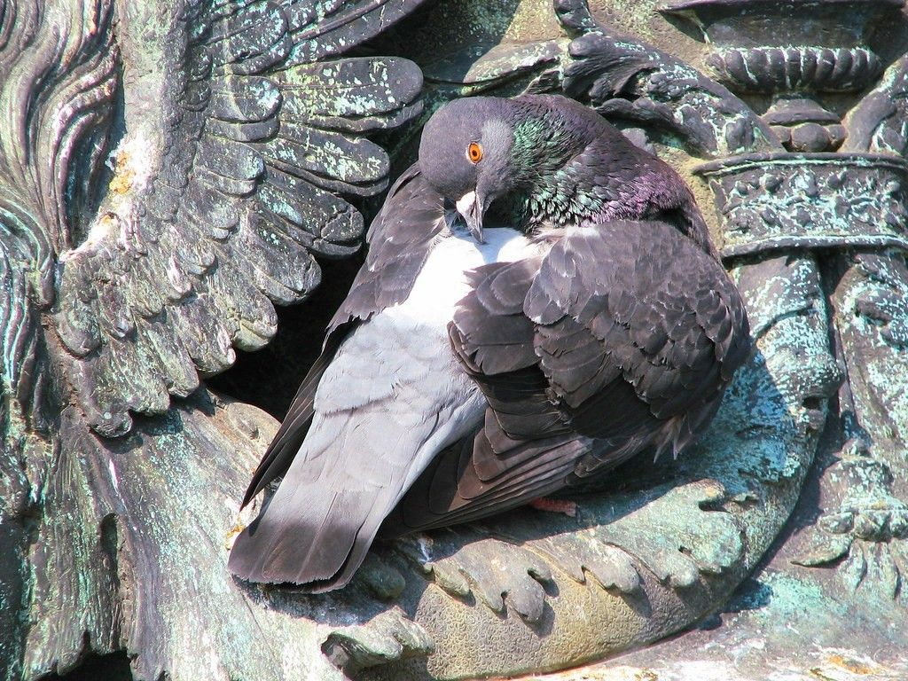

I Love Pigeons!
Pigeons are very special creatures, but not everyone knows exactly HOW special they are.
This lil' website will highlight reasons why these birds are so amazing.


Often referred to as "rats of the sky," pigeons do not hold the best reputation amongst us humans.
This reputation is extremely unfair, as pigeons, throughout history, have long been our devoted companions,
messengers, holy animals, and even a food source.
Pigeons are actually one of the oldest domesticated animals in the world. Being descendants of the wild Rock Pigeon,
humans domesticated these birds between 2,000–5,000 years ago. To this day, there are over 350 breeds of domesticated pigeons.


Pigeons served many purposes to mankind throughout history; most notably for carrying messages.
Due to their exceptional navigation abilities, pigeons are able to find their way to and from their homes across extremely long distances.
In addition, pigeons are also expert flyers, reaching speeds up to 90mph.
They have historically saved lives during wars by carrying letters through perilous warzones to warn soldiers of incoming attacks.
Many pigeons were injured or even died during these missions.
Not only have pigeons served as great tools for humankind, they have also made amazing companions.
Pigeons are highly social creatures. Living in flocks, they thrive in the company of others—both pigeons and people.
They are also highly loyal. Mating for life in the wild, pigeons share strong, emotional bonds with their counterparts.
It is no surprise that the dove is seen as a symbol of love.


It is a common misconception that pigeons are "dirty" and that they "spread disease."
While some of these claims sound believable, they are often misleading.
Their “dirtiness” mostly comes from the dirtiness of their habitat.
Since pigeons are closely tied to human environments, they do whatever they can to stay fed, clean, and sheltered.
Despite their best efforts, millions of pigeons suffer every day. Pigeons are not meant to live on their own without the help of humans.
In the wild, a pigeon’s lifespan ranges from 3–5 years. In captivity, pigeons tend to live 10–15 years, sometimes over 20.
Their shortened lifespan in cities is often due to poor urban environments, poor diets, injuries, and predators.
